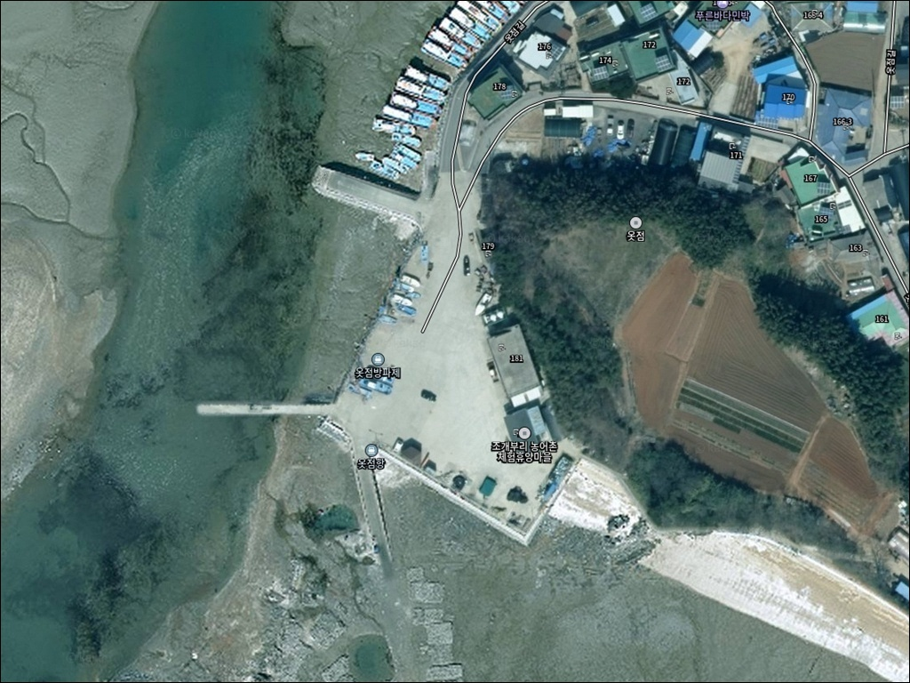
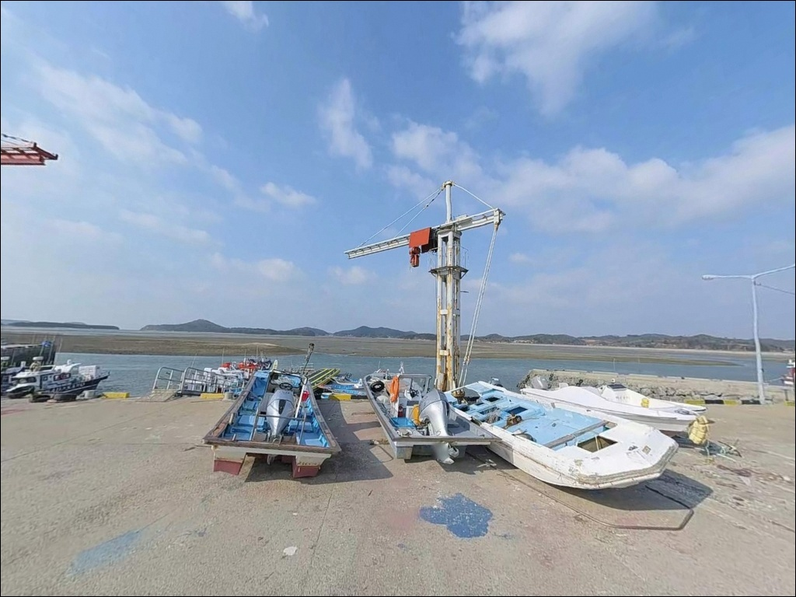
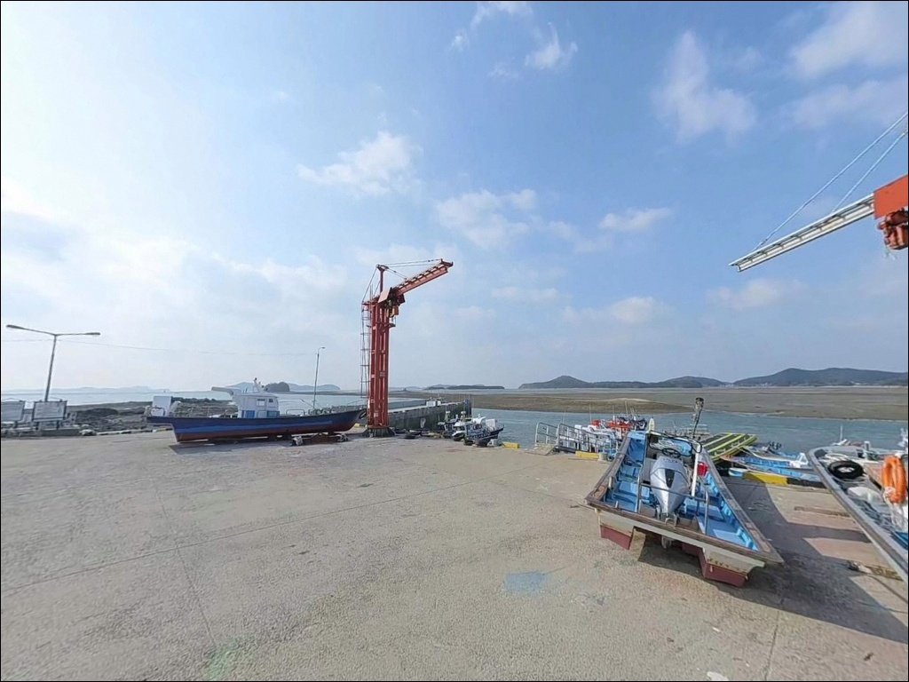
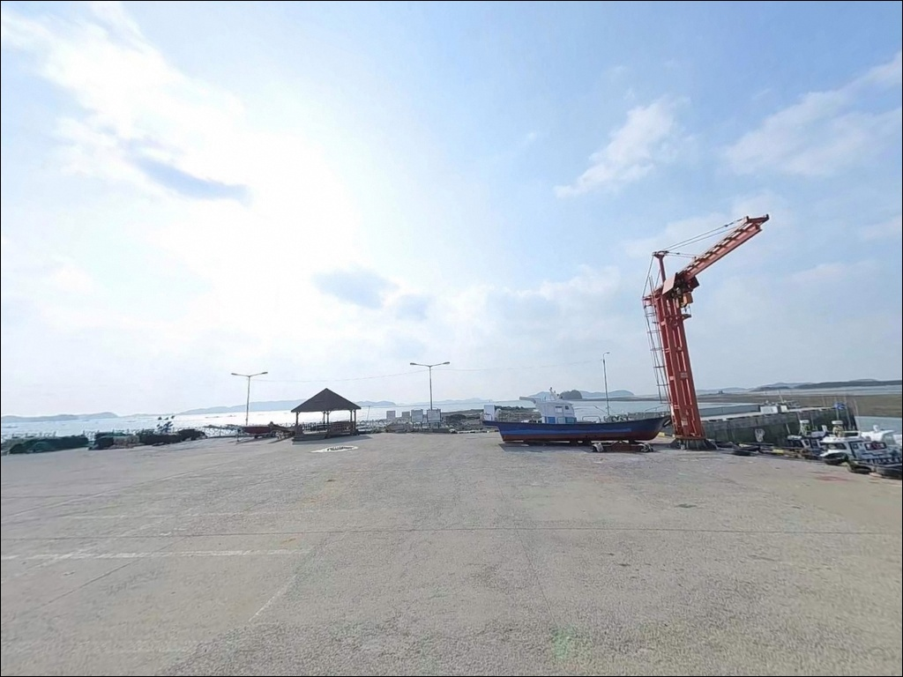
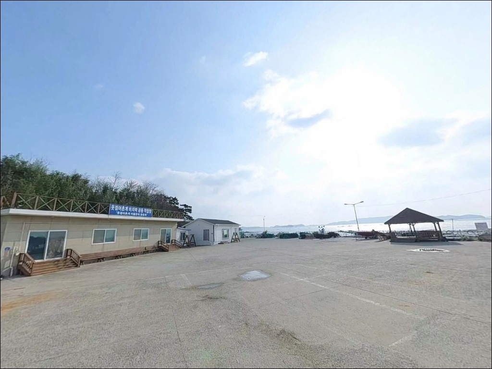
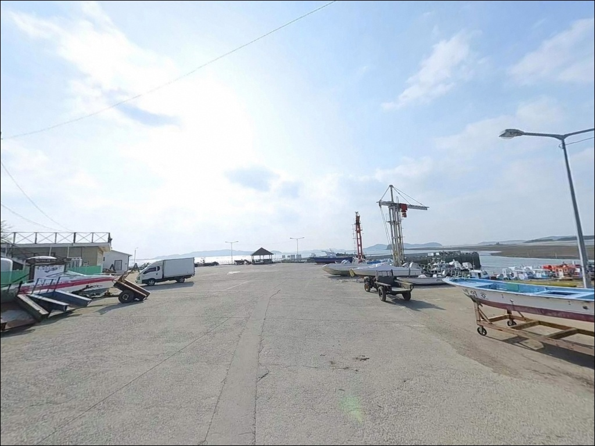
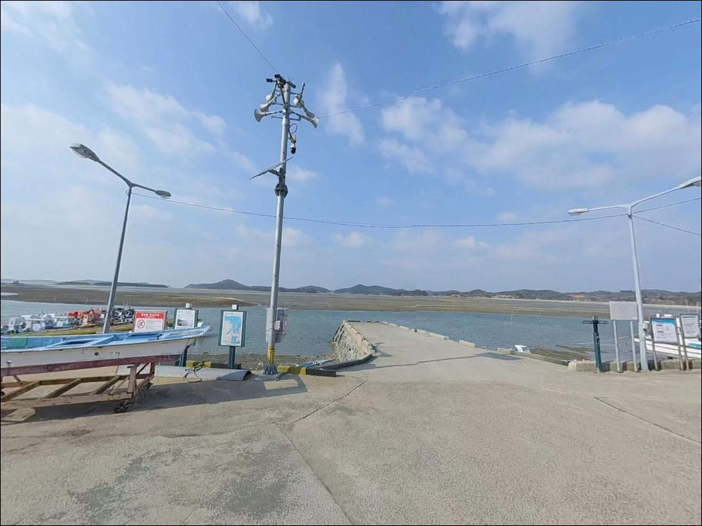
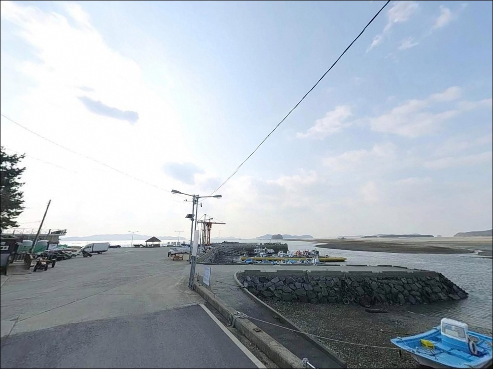
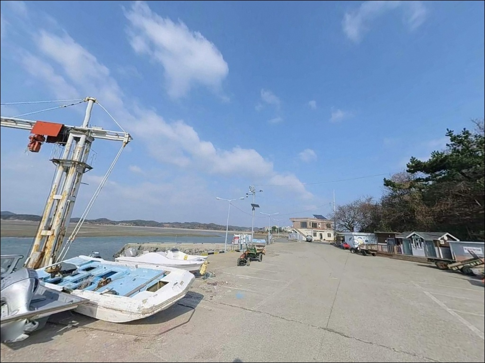

옷점항 (옷점방파제), 충남 태안군 한적한 분위기 속 차박, 낚시를 함께 하기 좋은 곳
이 페이지에는 광고(제휴 링크 포함)가 있으며, 광고 링크를 통해 구매하면 운영자가 판매 수익 또는 수수료를 받을 수 있습니다. 포인트 사진: 카카오맵 스카이뷰·로드뷰. 이 페이지의 지도·사진 이미지는 카카오맵의 실제 서비스 이미지와 다를 수 있습니다.


포인트 안내
옷점항
충남 태안군 고남면 고남리 1862-4
물때 계산 없이 옷점항에 도착하면,
간조 때 드러나는 갯벌 앞에서
채비를 던질 곳을 찾지 못하는 상황이 됩니다.
서해 소형 포구의 조석간만 차는 생각보다 크고,
타이밍 하나가 낚시 가능 여부 자체를 결정하는
포인트입니다.
충남 태안군 고남면 고남리,
안면도 최남단에 자리한 옷점항은
서쪽으로 뻗은 방파제와 내항 선착장을 갖춘
소형 어항입니다.
고남면 일대에서 광어 루어와
갑오징어·주꾸미 에깅 포인트로
낚시인들 사이에서 거론되는 곳입니다.
이 글은 옷점항의 진입 여건과 주차 조건,
물때 기반 낚시 여건,
지형에 어울리는 낚시 스타일 선택 기준에 집중합니다.
조황 단정이나 특정 어종 보장은
이 글의 범위에 포함되지 않습니다.

1. 진입 동선과 포인트 접근성
옷점항은 고남면 마을을 지나는 옷점길을 통해
접근하는 구조입니다.
포장도로이지만 폭이 좁은 마을 도로 수준이어서,
대형 SUV나 캠핑 트레일러를 연결한 차량이라면
출발 전 위성지도로 진입로를 확인하고 가는 편이
헛걸음을 막는 기본 조건입니다.
일반 승용차와 소형 SUV는
큰 어려움 없이 진입할 수 있는 수준입니다.
다만 회차 공간이 넉넉하지 않아,
항구 끝단에서 방향을 바꿔야 할 때
후진 진출이 어려운 차량은 불편할 수 있습니다.
마을 초입에서 방향을 잡아두는 것이
현실적인 대처입니다.
주차는 선착장 주변 공터를 이용하는 방식이 일반적입니다.
항구 구조상 1~2대 수용이 가능한 수준으로 보이며,
어선 출입 동선을 막지 않는 자리를
우선적으로 찾아야 합니다.
저지대 공터는 사리 전후 만조 시 침수 가능성이 있어
물때를 먼저 확인하고 주차 위치를 결정하는 것이
안전합니다.

2. 차박 환경과 야간 체류 여건
옷점항은 민가와 가까운 소형 포구입니다.
옷점길 주변으로 펜션들이 자리하고 있어
완전히 외딴 환경은 아니며,
야간에는 차량 통행이 거의 없어
조용한 분위기가 유지되는 편입니다.
가로등 수가 제한적일 가능성이 높습니다.
야간 낚시나 차박 체류 시에는
개인 헤드랜턴을 반드시 갖춰야 하며,
서남쪽으로 열린 해안 지형 특성상
기상에 따라 바람 영향을 받는 날이 있을 수 있습니다.
강풍 예보가 있는 날은 차박 체류 여건이
달라질 수 있습니다.
주차 공간이 제한적이어서
차박을 메인 목적으로 삼기에는 맞지 않는 구조입니다.
낚시를 마치고 잠깐 머무는 정도라면
불편함이 크지 않지만,
장기 체류나 차박 위주 계획이라면
영목항 인근이나 운여해변 방면을 대안으로
두는 편이 현실적입니다.


3. 주변 편의시설 및 인프라 현황
차량으로 약 3분 거리인 고남면 소재지에
편의 시설이 있습니다.
고남청솔할인마트와 식당 몇 곳이
고남면 중심부에 자리하고 있어
기본 식료품과 음료 보충은 가능합니다.
얼음이나 낚시 소품까지 필요하다면
출발 전에 준비를 마치는 편이 효율적입니다.
공중화장실은 옷점길 179에 위치한 곳이
상시 개방으로 운영되고 있습니다.
태안군 고남면에서 관리하는 시설이며,
현장 체류 중 이용할 수 있습니다.
고남면은 소규모 면 단위 행정구역이라
의료 인프라가 제한적입니다.
응급 상황 발생 시 안면읍 방향으로
이동해야 할 수 있으므로
비상약품과 간단한 구급 용품은
출발 전에 챙기는 것이 기본입니다.

4. 진입 전 반드시 챙겨야 할 준비사항
옷점항 방문 전 첫 번째 확인은 물때입니다.
바다타임에서 고남면 기준 물때표를 확인하고,
만조 전후 타이밍에 맞춰 도착 시각을 계획하는 것이
이 포인트를 제대로 활용하는 기본 전략입니다.
간조 전후에는 외항 방향 갯벌이 드러날 가능성이 있어
낚시 가능한 구간이 크게 좁아집니다.
채비 손실을 감안한 여분 준비도 필요합니다.
항구 주변 지형 특성상 밑걸림이 발생할 수 있으며,
에깅이나 루어를 운용한다면
에기와 지그헤드는 넉넉히 챙기는 편이 좋습니다.
기상 예보는 출발 당일 아침에 한 번 더 확인해
불필요한 출조를 줄이는 것이 현명합니다.
어선 조업이 이루어지는 선착장인 만큼
어선 동선과 계류 어구에 접촉하지 않는
자리 선정이 기본 매너입니다.
야간 낚시 시에는 헤드랜턴과 구명조끼를 반드시 착용하고,
방파제 끝단이나 물양장 가장자리에서는
조위 변화를 수시로 확인해야 합니다.

5. 수심과 조류, 지형이 만드는 낚시 여건
옷점항은 서쪽으로 뻗은 방파제와
내항 선착장을 갖춘 소형 포구로,
만 형태로 완만하게 열린 구조입니다.
방파제 끝단과 항 입구 방향에서
수심 변화가 나타나는 구간이 있을 가능성이 있으며,
이 구간이 루어와 원투낚시 모두 시도해 볼 만한 자리입니다.
서해 고남면 해역은 안면도 최남단에 위치해
외해 조류의 영향을 받는 편입니다.
만조 전후 조류가 살아 있을 때와
간조 전후 물이 빠진 상태는
낚시 여건 자체가 달라지는 포인트입니다.
정조 타이밍보다는
물이 들거나 빠지는 과정에서 조류가 형성될 때
어종 활성도가 높아지는 경향이 있습니다.
고남면 해역 일대에서 기대해 볼 수 있는 어종으로는
광어, 우럭, 주꾸미, 갑오징어,
붕장어, 가자미류가 거론됩니다.
옷점항 자체의 조황 자료는 많지 않으므로
출발 전에 "옷점항 낚시" 또는
"고남면 방파제 낚시"로 최신 조황을
반드시 검색해 보시기 바랍니다.


6. 포인트에 어울리는 낚시 스타일
광어 루어 워킹이 이 해역에서
가장 주목받는 낚시 방식입니다.
항구 주변 모래·혼합 바닥 구간을 따라
지그헤드나 메탈지그를 캐스팅하며
천천히 끌어오는 방식이 기본입니다.
만조 전후 조류가 살아 있을 때
바닥 탐색을 집중하는 것이 유효합니다.
갑오징어와 주꾸미 에깅도 시도해 볼 만합니다.
고남면 일대는 가을 시즌에
주꾸미와 갑오징어 조황이 기대되는 권역으로,
방파제 끝단이나 선착장 주변에서
에기를 운용하는 방식이 어울립니다.
원투낚시는 만조 전후 항 입구와
방파제 바깥 방향으로 채비를 멀리 던져
우럭·붕장어·가자미류를 노리는 방식입니다.
조류가 느려지는 정조 타이밍에
바닥 탐색을 집중하는 것이
이 포인트 구조에 맞는 운용 방법입니다.
야간에는 내항 선착장 주변에서
소형 지그헤드를 이용한 라이트게임으로
우럭이나 노래미를 노려볼 수 있습니다.
항구 주변 암초 경계를 천천히 탐색하는 방식이
어두운 시간대에 잘 어울립니다.

7. 대안 포인트와 플랜 B 동선
옷점항 여건이 여의치 않을 때
영목항이 기본 대안입니다.
고남면 최대 어항으로 선상, 좌대,
워킹 갑오징어·주꾸미 낚시가 활성화된 곳이며,
출조선사도 다수 운영 중입니다.
진입과 주차 여건이 안정적이고
편의 인프라도 상대적으로 갖춰져 있어
처음 방문하는 낚시인에게 기점으로 삼기
좋은 선택입니다.
장곰포는 서해 워킹 낚시 포인트로
알려진 지역입니다.
루어낚시와 원투를 즐기는 낚시인들이 찾는 곳으로
옷점항과 낚시 스타일이 겹치기 때문에
이 포인트가 여의치 않을 때
묶어서 이동하기 좋은 동선입니다.
안면대교 인근 워킹 포인트는
조류 변화를 활용한 루어낚시가 잘 맞는 구간으로,
광어와 농어를 노리는 낚시인들이 찾습니다.
차박을 중심으로 계획 중이라면
운여해변이 해변형 주차 여건을 갖춘
현실적인 차박 대안입니다.

조용한 포구, 물때 하나 잡으면
옷점항이 달라 보입니다
광어 루어나 갑오징어·주꾸미 에깅을 즐기는
낚시인이라면 옷점항의 지형 조건은
충분히 맞는 구조입니다.
안면도 최남단 고남면 해역의 조류 여건과
항구 주변 모래·혼합 바닥 구간이
워킹 루어와 에깅 모두에
활용될 수 있는 환경입니다.
반면 대형 차량을 이용하거나
편의 인프라가 잘 갖춰진 곳을 찾는다면
영목항이 더 현실적인 선택입니다.
소형 포구인 만큼 자급 준비, 물때 계산,
진입로 사전 확인,
이 세 가지를 갖추고 방문하는 것이
이 포인트를 제대로 쓰는 방법입니다.
온라인에 조황 정보가 많지 않은
숨은 소형 항구 타입의 포인트이기 때문에
직접 발품을 팔아야 하는 부분이 있습니다.
물때 하나만 제대로 잡아두면
조용한 포구에서 낚시와 차박을 겸하는
출조가 될 수 있는 곳입니다.